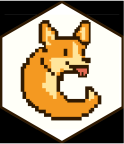

Is the
Is the caugi graph a DAG?
is_dag.RdChecks if the given caugi graph is a
Directed Acyclic Graph (DAG).
See also
Other queries:
ancestors(),
children(),
descendants(),
edge_types(),
edges(),
exogenous(),
is_acyclic(),
is_caugi(),
is_cpdag(),
is_empty_caugi(),
is_pdag(),
markov_blanket(),
neighbors(),
nodes(),
parents(),
same_nodes(),
subgraph()
Examples
cg_dag_class <- caugi(
A %-->% B,
class = "DAG"
)
is_dag(cg_dag_class) # TRUE
#> [1] TRUE
cg_dag_but_pdag_class <- caugi(
A %-->% B,
class = "PDAG"
)
is_dag(cg_dag_but_pdag_class) # TRUE
#> [1] TRUE
cg_cyclic <- caugi(
A %-->% B,
B %-->% C,
C %-->% A,
class = "UNKNOWN",
simple = FALSE
)
is_dag(cg_cyclic) # FALSE
#> [1] FALSE
cg_undirected <- caugi(
A %---% B,
class = "UNKNOWN"
)
is_dag(cg_undirected) # FALSE
#> [1] FALSE